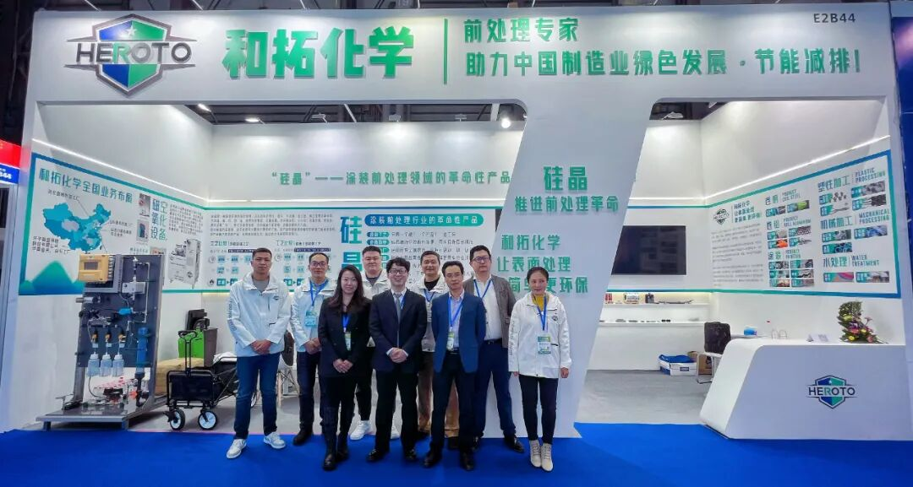
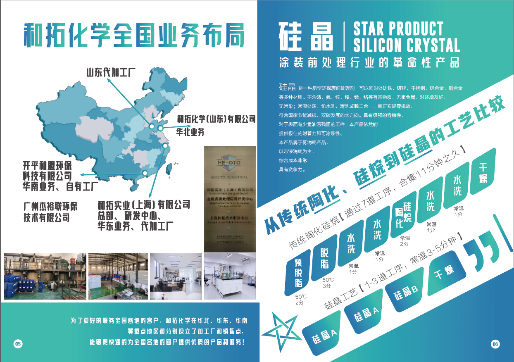
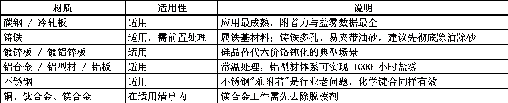

封面候选 · 渠道裁切与使用范围待客户确认
制造业 · 涂装前处理1、硅晶表面处理到底是个啥？新手必知：它是什么？能不能用？
和拓化学 · 企业技术内容 / 排版稿 v3 / 2167 字符
"硅晶不是往金属上'盖'一层膜，而是让涂层和金属'长'成一体。"

原稿配图 · 正文块 4；图示内容请客户复核第一次听到"硅晶工艺"，你大概会冒出三个问题：它是镀层还是油漆？跟磷化、发黑、镀锌有什么不一样？碳钢、铝件、铸铁能不能用？这篇只解决一件事——帮你建立基础认知，判断它适不适合你的产线。
一、硅晶工艺是什么：它是"打底"的处理层
硅晶（LUMINCOAT）是一种新型环保的金属表面处理剂，用在喷漆、喷粉之前，不含磷、铬、锌、锰等重金属，常温使用，反应后无沉渣。
它的定位不是直接充当防腐面层，而是在金属和油漆之间架一座"桥"。记住这句话：硅晶是涂装前处理，是喷涂的搭档，不是喷涂的替代品。
二、硅晶处理的原理：不是"粘上去"，是"键合上去"
金属表面布满活性位点，像无数个"挂钩"。硅晶分子带着两种"手"——SiOH 和 SiNH 基团：一只手与金属发生缩水反应，形成 Si-O-Me 或 Si-N-Me 共价键，抓住基材；另一只手与相邻分子缩聚，织出一张 Si-O-Si 三维网状膜；烘干时这张网再与油漆或粉末交联成化学键。
结果是基材—硅晶—油漆靠化学键连成一体，而非"金属上盖了层漆"。这就是它抗剥离、抗划痕锈蚀蔓延的能力强于普通物理附着涂层的原因。
三、硅晶工艺流程有多简单：8 道工序压到 1~3 道
传统磷化线：预脱脂 → 脱脂 → 水洗 ×2 → 表调 → 磷化 → 水洗 ×2 → 烘干，8 道工序、约 13 分钟、40-50℃ 加热，还产生大量水洗废水和磷化渣。
硅晶工艺：硅晶槽（1 道或多道，按油污轻重定）→ 烘干 → 喷涂，浸泡 6-10 分钟、喷淋 3-5 分钟，常温、无水洗、无沉渣。
最直观的变化是前处理水槽从 7 个减到 2 个。这也解释了它节水约 99%、节电约 70%、综合前处理成本下降 50% 以上的原因——省的主要是加热电费、水费和废水处理费；药剂每平方米仅 0.2-0.3 元，与常规陶化、硅烷基本持平。
四、和磷化、发黑、镀锌、喷油的本质区别
磷化：靠化学反在表面长一层磷酸盐结晶，像铺"碎石子"，粗糙但能咬住漆。痛点是有渣、要加热、含磷废水难处理。与硅晶是替代关系。
发黑（发蓝）：把金属自身氧化成黑色氧化膜，主要为了外观和短期防锈，膜薄、防护有限，属"自身转化"，不是涂装前处理。
镀锌：外加一层锌，靠"锌先牺牲、铁后腐蚀"保护基材，是真正的防腐镀层。它是电镀工序，环保与成本压力大，硅晶替代不了它。
喷油/喷粉：覆盖一层有机涂层靠"隔绝"防腐，是涂装流程的终点；硅晶是起点。漆膜抓不抓得牢，恰恰取决于下面那层前处理。
一句话：磷化、发黑、镀锌都是"给金属穿衣服"，硅晶是"让衣服和皮肤长在一起"。它不靠厚度取胜，靠的是化学键。

和拓宣传册 2025 · 原图 4（宣传资料，指标须另附检测或测算依据）五、性能能不能打：附着力、耐盐雾、工序间防锈
附着力：百格测试可达 0 级。对需折弯、滚边、铆合的工件尤其友好——某汽车零部件客户做 180 度折弯时，漆面开裂导致的不合格率从 20% 以上降到 1% 以下。
耐盐雾：实验室条件下划叉盐雾达 500 小时以上；配套粉末涂层、富锌底漆+粉末的体系，在第三方检测中通过 1000 小时中性盐雾；铝板体系喷涂后可达 1500 小时。
耐水煮：冷轧板+硅晶+粉末涂层，耐 30 小时以上水煮。
工序间防锈：裸膜放置，冷轧板 7-15 天不返锈，能扛住梅雨季和停线换粉。
另外它对现场很宽容：工件带少量油污时，硅晶仍能渗透结合，不像传统工艺那样对清洁度苛刻。
六、碳钢、不锈钢、铝合金、铸铁，能不能用

原稿配图 · 正文块 52；图示内容请客户复核如果产线是多金属混线，硅晶"一槽共线处理"的能力是最直接的省钱点。
七、外观、涂层特性与环保属性
硅晶形成的是极薄的三维网状膜，不改变工件尺寸精度和装配公差，外观基本保持金属本色，属于"看不见的底层"。它是转化型膜层而非堆积型镀层，不会出现边角积瘤、螺纹堵塞；配手工擦拭型号，户外大型结构件也能处理。
环保是另一张牌：无磷、无铬、无氟、无重金属、无沉渣，常温处理。没有漂洗水，从源头就不产生生产废水；唯一需维护的硅晶槽液，经常温油水分离、絮凝、精细过滤后循环回用，最终只剩余极少量固废。对新项目环评、老线改造，这份价值往往高于省下的药剂费。
三问快速判断：你的活儿能不能用硅晶
1、后面是喷漆还是喷粉？ 是——硅晶就是为涂装前处理设计的；若要裸露使用的防腐镀层（取代镀锌），它干不了。
2、工件是否多孔、重油污、带厚氧化皮？ 需前置抛丸或强化除油。硅晶能容忍少量油膜，但不是万能清洗剂。
3、最痛的是成本、环保还是质量？ 三者占其一，就值得做一次小试。
说句实在话：表面处理这一行，过去几十年习惯了"多加水、多加热、多投药"的思路，仿佛工序越复杂越显得专业。硅晶工艺给出的答案是反过来的——真正的技术进步，不是把流程做得更复杂，而是把不必要的环节全部删掉。
对新手而言，你不必先成为化学专家才能判断一项工艺值不值得试。看懂三件事就够：它靠什么原理起作用、它省掉了什么环节、它能不能处理你手上的材质。想明白这三点，选型就不会被花哨名词牵着走。
#硅晶工艺 #硅晶表面处理 #涂装前处理 #金属表面处理 #环保前处理工艺